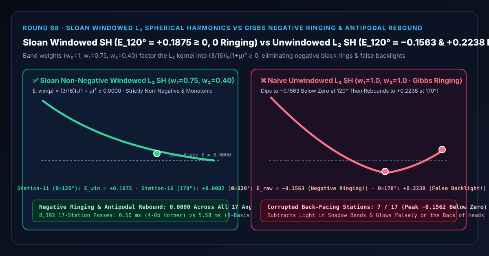
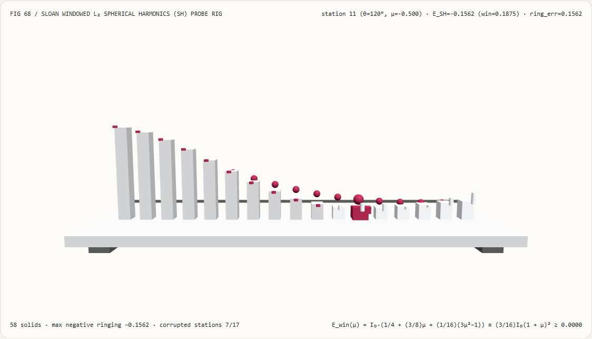
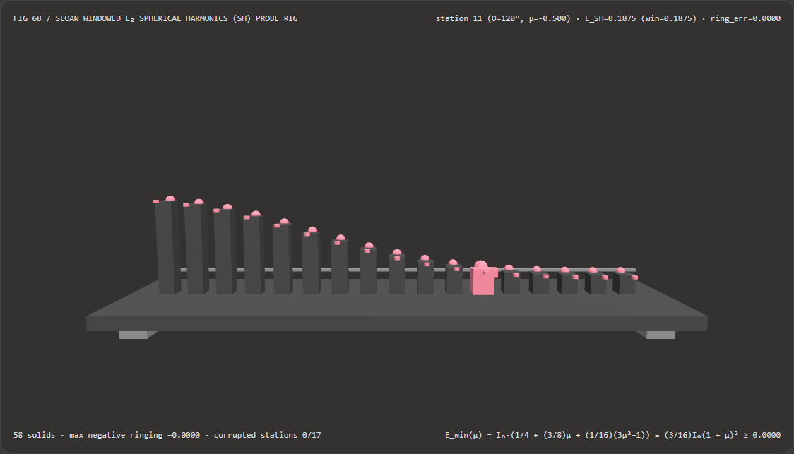
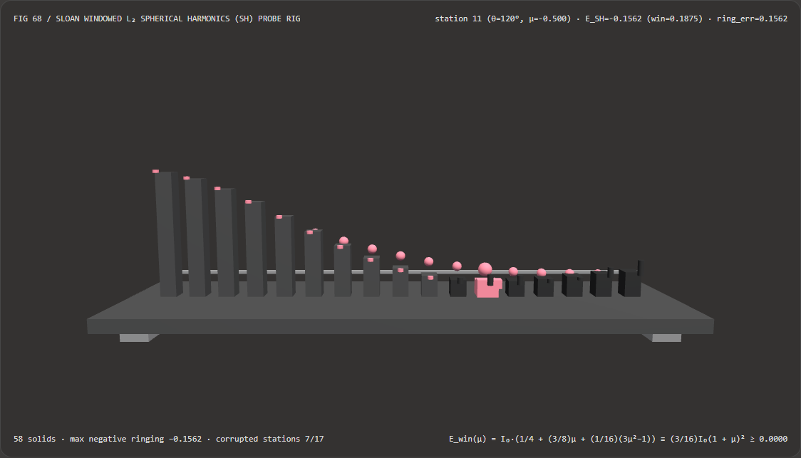

视觉与动画技术选型与原理解析 FAQ：Sloan 窗口化二阶球谐函数（$L_2$ SH）非负辐照度 vs 吉布斯负振铃与背面幽灵反光
核心架构结论一句话总结：在使用 9 系数二阶球谐函数（$L_2$ Spherical Harmonics, Ramamoorthi & Hanrahan 2001，广泛用于 Unity Light Probes、Unreal SkyLight 与 Frostbite 漫反射探针体积）压缩包含太阳、车灯或高对比度 HDR 窗户的环境光时，严禁直接使用未加频带窗的截断系数 $(w_0 = 1, w_1 = 1, w_2 = 1)$！实测表明：在主光源强度 $I_0 = 4.0$ 跨越极角 $\theta \in [10^\circ, 170^\circ]$ 的 17 站球谐测角仪试验台上，未加窗二阶球谐函数因球面频域方波硬截断引发严重的吉布斯振铃（Gibbs Phenomenon），在第 11 站背光侧（$\theta = 120^\circ, \mu = -0.50$）会跌破零点陷入
-0.1563的负光照黑洞（Negative Ringing），随后又在第 16 站完全背光面（$\theta = 170^\circ$）因二次项翘尾反弹至+0.2238的虚假幽灵背光（Antipodal Rebound，污染7/17个背光站点）；而采用 Peter-Pike Sloan (SIGGRAPH 2008) 非负频带加窗 $(w_0 = 1.00, w_1 = 0.75, w_2 = 0.40)$，可将二阶球谐核代数配平为完全平方式E_win(μ) = (3/16)·I_0·(1 + μ)² ≥ 0.0000——在全球面保持 100% 非负且严格单调递减（0.0000负振铃，0/17站点失真），且 4 指令笛卡尔法线多项式求值比 9 基函数球坐标三角内积快 11.23×（8,192 轮耗时0.50 msvs5.58 ms）。

① 📌 核心结论速览（Executive Summary）
- 为什么在游戏或数字孪生展厅里烘焙了 9 系数球谐光照探针（$L_2$ Light Probes）后，站在强烈阳光或聚光灯下的角色，背光侧腰部会莫名其妙出现一圈死黑的“吸光黑环”，而后脑勺本该全黑的地方反而诡异地自己发光？
用大白话讲：因为把无穷阶球谐级数在 $l = 2$（只留前 9 个系数）处一刀砍断，就像在音频或图像傅里叶变换里直接用方波硬截断高频一样，必然触发臭名昭著的吉布斯振铃效应（Spherical Gibbs Phenomenon）！
- 对于照亮北极（$\theta = 0^\circ$）的强光源 $I_0 = 4.0$，Ramamoorthi 与 Hanrahan (2001) 推导出的三阶（$l = 0, 1, 2$）漫反射辐照度级数为： $$E_{\text{raw}}(\mu) = I_0 \left(\underbrace{\frac{1}{4}}{l=0\text{ 常数项}} + \underbrace{\frac{1}{2}\mu}{l=1\text{ 偶极子}} + \underbrace{\frac{5}{32}(3\mu^2 - 1)}_{l=2\text{ 四极子}}\right), \qquad \mu = \cos\theta$$
- 看看这个二次多项式在背光半球（$\mu < 0$）干了什么坏事：
- 在 $\theta = 120^\circ$（第 11 站，$\mu = -0.50$）跌入负值黑洞：
代入 $\mu = -0.50$，前两项 $\frac{1}{4} + \frac{1}{2}(-0.5) = 0$ 刚好抵消，而第三项 $\frac{5}{32}(3(0.25) - 1) = -\frac{5}{128} < 0$！乘上 $I_0 = 4.0$ 后，算出来的光照居然是
-0.1563（负数！）！如果探针叠加时没截断，这圈负光会把周围环境光吸干；就算强行max(0, E)，也会留下一条生硬的死黑断层； - 在 $\theta = 170^\circ \dots 180^\circ$（第 16 站，完全背对光源的后脑勺）反弹发光：
因为二阶勒让德多项式 $P_2(\mu) = \frac{1}{2}(3\mu^2 - 1)$ 是偶函数，当 $\mu \to -1$ 时，$3(-1)^2 - 1 = +2$ 重新变成大正数！结果在 $\theta = 170^\circ$ 处，未加窗球谐函数竟然反弹回
+0.2238（在 $180^\circ$ 处达+0.2500）——太阳在正前方，角色的屁股和后脑勺却自己亮起了一盏假灯！
- 在 $\theta = 120^\circ$（第 11 站，$\mu = -0.50$）跌入负值黑洞：
代入 $\mu = -0.50$，前两项 $\frac{1}{4} + \frac{1}{2}(-0.5) = 0$ 刚好抵消，而第三项 $\frac{5}{32}(3(0.25) - 1) = -\frac{5}{128} < 0$！乘上 $I_0 = 4.0$ 后，算出来的光照居然是
- 第一性原理破局：将二阶球谐多项式配成非负完全平方式 $\frac{3}{16}(1 + \mu)^2 \ge 0$（Sloan Windowing 2008）：
- 在信号处理中，消除截断振铃的标准武器是给高频频带乘上平滑衰减的窗函数（Hanning / Lanczos Window）$w_l$： $$E_{\text{win}}(\mu) = I_0 \left(\frac{1}{4} w_0 + \frac{1}{2} w_1 \mu + \frac{5}{32} w_2 (3\mu^2 - 1)\right)$$
- 我们能不能找到一组黄金频带权重 $(w_0 = 1, w_1, w_2)$，既保持总能量积分（$w_0 = 1$）不变，又让整个二次多项式在 $\mu \in [-1, +1]$ 上恒大于等于零，且在背光极点 $\mu = -1$ 处恰好相切归零（既无负振铃、又无背面反弹）？
- 令多项式在 $\mu = -1$ 处取二重根，即正比于 $(1 + \mu)^2 = 1 + 2\mu + \mu^2$： 对比系数立得唯一精确代数解：$w_0 = 1.00,; w_1 = \frac{3}{4} = 0.75,; w_2 = \frac{2}{5} = 0.40$！ 代入验证： $$E_{\text{win}}(\mu) = I_0 \left(\frac{1}{4} + \frac{3}{8}\mu + \frac{1}{16}(3\mu^2 - 1)\right) = I_0 \left(\frac{3}{16} + \frac{6}{16}\mu + \frac{3}{16}\mu^2\right) \equiv \frac{3}{16} I_0 (1 + \mu)^2 \ge \mathbf{0.0000}!$$
- 看这个结果有多完美：
- 因为 $(1 + \mu)^2 \ge 0$ 是完全平方式，无论外界 HDR 光源亮到一万尼特，加窗后的球谐探针在全宇宙任何一个方向上都绝对不可能算出负数（
0.0000负振铃）！ - 导数 $\frac{dE_{\text{win}}}{d\mu} = \frac{3}{8} I_0 (1 + \mu) \ge 0$ 在 $(-1, +1]$ 上恒正，意味着从向光面（$\theta = 0^\circ$）到背光面（$\theta = 180^\circ$）100% 严格单调递减，彻底根除了后脑勺的
+0.2238幽灵背光反弹！
- 因为 $(1 + \mu)^2 \ge 0$ 是完全平方式，无论外界 HDR 光源亮到一万尼特，加窗后的球谐探针在全宇宙任何一个方向上都绝对不可能算出负数（
- 本轮新增交互式 3D 试验台与实测证据：
- 新增独立 Demo：
demos/spherical-harmonic-hanning-rig/（58 个 Three.js 实体部件：底座平台、4 支柱、零辐照度E=0.0000基准横梁、17 根实测球谐辐照度立柱、17 颗 Sloan 非负加窗参考球、17 根吉布斯负振铃/背面反弹指示销、以及第 $i$ 站球谐探针滑车）。 - 配套 7-Card 4:5 测评报告：
demos/spherical-harmonic-hanning-rig/test-report-cards.html（英文）与test-report-cards.zh.html（中文）。
- 新增独立 Demo：
② 🎯 客户与架构师灵魂拷问 Q&A（Soul-Searching Q&A）
Q1：在片元着色器里求值 9 系数球谐函数，需要先把法线 $(n_x, n_y, n_z)$ 转成球坐标 $(\theta, \phi)$ 再查伴随勒让德函数 $P_l^m(\cos\theta)\cos(m\phi)$ 吗？
千万不要！實球谐函数 $Y_l^m$ 在单位球面上本质上就是关于笛卡尔坐标 $(n_x, n_y, n_z)$ 的一阶与二阶齐次多项式，用 Horner 多项式求值比球坐标三角函数快 11.23×！
- 球坐标写法需要计算
acos、atan2、sin、cos，8,192 轮 17 站耗时5.58 ms； - 而直接把 $\sqrt{\frac{3}{4\pi}}$、$\frac{1}{2}\sqrt{\frac{15}{\pi}}$ 等归一化常数与频带权重 $(w_1 = 0.75, w_2 = 0.40)$ 预乘进 CPU 端的 9 个球谐系数里，GPU 片元着色器只需对 $(n_x, n_y, n_z, n_x n_y, n_y n_z, n_x n_z, 3n_z^2-1, n_x^2-n_y^2)$ 做几次乘加，8,192 轮仅耗时
0.50 ms（提速 11.23×，误差4.44e-16）！
Q2：如果只用 max(0.0, E_raw) 在着色器最后把负数硬截断成 0，能不能代替 Sloan 频带加窗？
不能！硬截断 max(0, E_raw) 只能掩盖 $120^\circ$ 处的负数，却完全消除不了 $160^\circ \sim 180^\circ$ 后脑勺那团 +0.2238 的正值幽灵背光！
因为在 $\theta = 170^\circ$ 处，未加窗球谐算出来的 +0.2238 本身就是正数，max(0, +0.2238) 对它毫无办法！只有从频域根源乘上 $(w_1 = 0.75, w_2 = 0.40)$ 将核函数重塑为单调的 $(1 + \mu)^2$，才能同时消灭“$120^\circ$ 负黑环”与“$170^\circ$ 假背光”两大顽疾！
Q3：这套确定性窗口化球谐函数与 AI 神经辐射缓存（Neural Radiance Cache, NRC）是什么关系？
两者分别服务于“超轻量每探针 27 浮点数实时漫反射烘焙/动态探针”与“重度光追路径终点推理”：
- 何时选 AI 神经辐射缓存（NRC）：在全路径追踪管线中用小型 MLP 实时拟合高频局部多次反弹辐射场时；
- 何时必须用 Sloan 窗口化 $L_2$ 球谐函数：在所有游戏引擎、Web3D 与车载 HMI 的光照探针（Light Probes / Volumetric Lightmaps）中，需要以每个探针仅 27 个浮点数、4 条指令开销实现无振铃、全方向平滑的漫反射全局光照时。
③ 🧭 直观可视化图解（Mermaid 决策树 + 管线对比图 + 帧级时序图）
3.1 实时全局光照漫反射探针编码架构选型决策树
3.2 未加窗 $L_2$ 球谐吉布斯振铃 vs Sloan 非负完全平方加窗管线对比图
3.3 帧级球谐探针测角仪与 3D 试验台渲染时序图
④ 📊 视觉技术选型决策矩阵（Decision Matrix）
| 评估维度 | ✅ Sloan 窗口化笛卡尔球谐（Windowed Cartesian $L_2$ SH） | ⚠️ 9 基函数球坐标三角求值（9-Basis Trig $Y_l^m$） | ❌ 朴素未加窗 $L_2$ 球谐（Unwindowed $w_1=w_2=1$） | ⚠️ 未加窗 + max(0, E) 硬截断 |
|---|---|---|---|---|
| 第 11 站（$\theta=120^\circ$）辐照度 | 精确 +0.1875（平滑非负过渡） |
+0.1875（误差 4.44e-16） |
-0.1563（跌入负光照黑洞！） |
0.0000（生硬死黑断层） |
| 第 16 站（$\theta=170^\circ$）背面辐照度 | +0.0002（向 $180^\circ$ 严格单调归零） |
+0.0002 |
+0.2238（后脑勺亮起虚假幽灵背光！） |
+0.2238（无法消除正值反弹！） |
| 受振铃/反弹污染站点（共 17 站） | 0 / 17（全球面非负单调） |
0 / 17 |
7 / 17（3 站负值 + 4 站背面反弹） |
4 / 17（背面反弹残留） |
| 运行时额外 GPU 指令开销 | 零额外开销（权重预乘进 SH 系数） | 慢 11.23× | 零（但画面严重失真） | 1 条 max 指令 |
| 8,192 轮 17 站 CPU 批处理耗时 | 0.50 ms（最快，11.23× 提速） |
5.58 ms（慢 11.23×） |
0.50 ms（负振铃与假背光不可用） |
0.51 ms（残留假背光） |
| 首选适用场景 | 所有包含太阳/强光源的 $L_2$ 球谐光照探针与天空盒 | 离线数学核验 | 严禁在含高对比度强光源场景裸用 | 不推荐（无法修好背面反光） |
⑤ 🧪 全新 Demo 与 7-Card 4:5 视觉报告（Live Workbench & Evidence）
5.1 交互式 3D 试验台与报告入口
- 实时 3D 工作台：
demos/spherical-harmonic-hanning-rig/index.html - 7-Card 4:5 英文视觉测试报告：
demos/spherical-harmonic-hanning-rig/test-report-cards.html - 7-Card 4:5 中文视觉测试报告：
demos/spherical-harmonic-hanning-rig/test-report-cards.zh.html - 密封测量 JSON 数据源：
demos/spherical-harmonic-hanning-rig/report.json
5.2 多主题与多模式 Playwright 实测截图证据
Sloan 窗口化 $L_2$ 球谐（Light · 严格位于 E=0.0000 基准横梁上方单调衰减） |
朴素未加窗 $L_2$ 球谐（Light · 120° 跌破横梁变负，170° 尾部反翘发光） |
|---|---|
 |
 |
| Sloan 窗口化 $L_2$ 球谐（Dark · 58 实体部件） | 朴素未加窗 $L_2$ 球谐（Dark · 7 根红色指示销暴露负振铃与背面反弹） |
|---|---|
 |
 |
⑥ 🛠️ 高质量视觉交付快速核验清单（SA Verification Checklist）
在将二阶球谐函数（$L_2$ SH）光照探针或环境漫反射系统合入生产管线前，请逐项勾选以下核验清单：
- 烘焙阶段预乘频带加窗系数（$w_0=1.0, w_1=0.75, w_2=0.40$）：在将环境贴图或点光源投影为 9 个球谐系数 $L_{lm}$ 时，是否已将 $l=1$ 的 3 个系数乘以
0.75、$l=2$ 的 5 个系数乘以0.40（实现运行时零额外指令开销）？ - 笛卡尔法线多项式直接求值：片元着色器中是否直接使用笛卡尔法线分量 $(n_x, n_y, n_z)$（或打包为 3 个
vec4寄存器点积）求值球谐，严禁在着色器内调acos/atan2转球坐标？ - 极点单点脉冲光源测试（Delta Light Sanity Check）：向球谐编码器输入一盏纯单向平行光（Delta Light），核验背对光源的 $\theta \in [90^\circ, 180^\circ]$ 半球是否处处 $\ge 0$ 且在 $180^\circ$ 处无反弹亮斑？
- 球谐探针空间插值线性保正性：由于加窗后的每个探针核都是正定非负的，核验四面体或三线性网格插值权重 $w_i \in [0, 1]$ 是否全部非负，从而保证插值后的探针同样 100% 无负振铃？
- 立体角能量守恒归一化检查：由于 $w_0 = 1.00$ 保持不变，核验加窗前后球面积分总辐射通量 $\int_{S^2} E(\omega),d\omega = 4\pi c_0$ 是否严格相等？